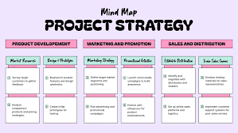

Why it's special:
Robby incorporates an interactive experience into
his portfolio.
|
What it’s about:
If you associate portfolios with a dry list of facts,
this portfolio might surprise you. Robby found a novel way of
displaying what was otherwise dry information — he laid out his
portfolio site as a videogame that the visitor can actually play. This
incredibly fun interactive design portfolio will make you scroll …
|
Why it's special:
Robby incorporates an interactive experience into
his portfolio.
What it’s about:
If you associate portfolios with a dry list of facts, this
portfolio might surprise you.Robby found a novel way of displaying
what was otherwise dry information — he laid out his
portfolio site as a
videogame that the visitor can actually play.
This incredibly fun
interactive design portfolio will make you scroll …
.png )